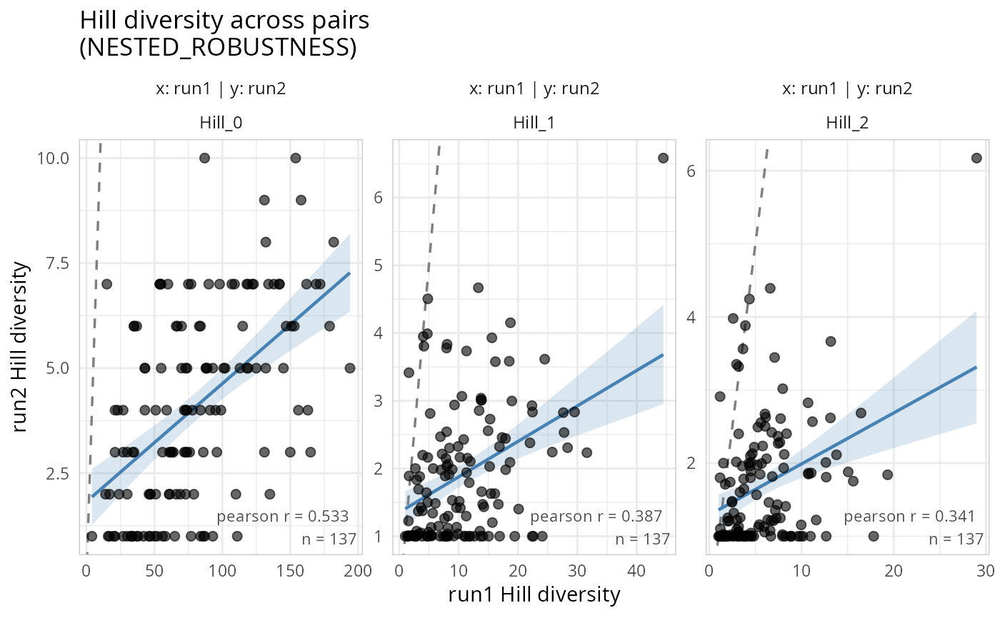
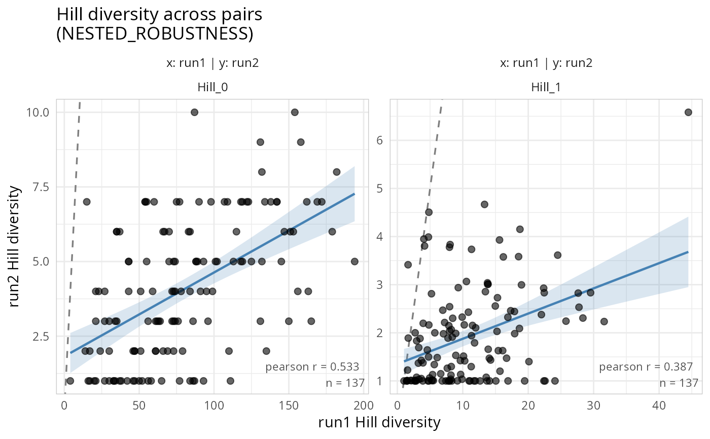
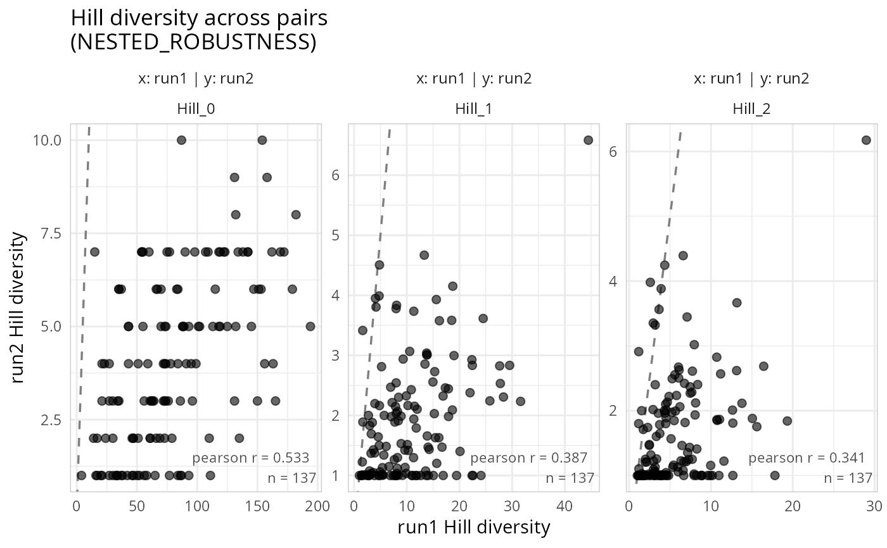

Scatter plots of Hill diversity across pairs of phyloseq objects
Source:R/gg_hill_lpq.R
gg_hill_lpq.RdFor each pair of phyloseq objects in a list_phyloseq, computes Hill numbers (richness, Shannon exponential, inverse Simpson) per sample and draws scatter plots comparing the diversity of the same samples across objects. This is a visual diagnostic for REPRODUCIBILITY, ROBUSTNESS, and REPLICABILITY comparisons.
Each point represents one sample. A 1:1 reference line and optional regression line help assess how similar (or different) the diversity estimates are between two pipelines, runs, or primers.
Usage
gg_hill_lpq(
x,
hill_scales = c(0, 1, 2),
pairs = NULL,
add_1to1 = TRUE,
add_smooth = TRUE,
cor_method = "pearson",
point_color = "black",
point_alpha = 0.6,
point_size = 2,
smooth_color = "steelblue",
verbose = TRUE
)Arguments
- x
(required) A list_phyloseq object.
- hill_scales
(numeric vector, default
c(0, 1, 2)) Hill number orders to compute: 0 = richness, 1 = Shannon exponential, 2 = inverse Simpson.- pairs
(list of integer pairs or NULL, default NULL) Which pairs of phyloseq objects to compare. Each element must be a length-2 integer vector of indices. If NULL, all pairwise combinations are used.
- add_1to1
(logical, default TRUE) If TRUE, adds a dashed 1:1 identity line to each panel.
- add_smooth
(logical, default TRUE) If TRUE, adds a linear regression line with confidence interval via
ggplot2::geom_smooth().- cor_method
(character, default
"pearson") Correlation method for the annotation label. One of"pearson","spearman","kendall".- point_color
(character, default
"black") Color for scatter points.- point_alpha
(numeric, default 0.6) Transparency for scatter points.
- point_size
(numeric, default 2) Size for scatter points.
- smooth_color
(character, default
"steelblue") Color for the regression line and confidence ribbon.- verbose
(logical, default TRUE) If TRUE, print a message when common samples are used instead of all samples.
Value
A ggplot2::ggplot() object with panels arranged in a grid:
rows = pairs of phyloseq objects, columns = Hill number orders.
Details
The function works on common samples across all phyloseq objects. When
the list_phyloseq has same_samples = TRUE, all samples are used. When
samples differ (e.g., NESTED_ROBUSTNESS), only the intersection is kept.
Comparison type context:
- REPRODUCIBILITY
High correlation expected for all Hill orders.
- ROBUSTNESS
Moderate to high correlation is desirable; deviations indicate pipeline sensitivity.
- REPLICABILITY
Correlation may vary across Hill orders depending on primer or technology differences.
Examples
lpq <- list_phyloseq(
list(run1 = data_fungi, run2 = data_fungi_mini),
same_bioinfo_pipeline = FALSE
)
#> ℹ Building summary table for 2 phyloseq objects...
#> ℹ Computing comparison characteristics...
#> ℹ Checking sample and taxa overlap...
#> ℹ Detected comparison type: NESTED_ROBUSTNESS
#> ℹ 137 common samples, 45 common taxa
#> ✔ list_phyloseq created (NESTED_ROBUSTNESS)
gg_hill_lpq(lpq)
#> Samples differ across phyloseq objects. Using 137 common samples.
#> Taxa are now in columns.

gg_hill_lpq(lpq, hill_scales = c(0, 1))
#> Samples differ across phyloseq objects. Using 137 common samples.
#> Taxa are now in columns.

gg_hill_lpq(lpq, add_smooth = FALSE, add_1to1 = TRUE)
#> Samples differ across phyloseq objects. Using 137 common samples.
#> Taxa are now in columns.
